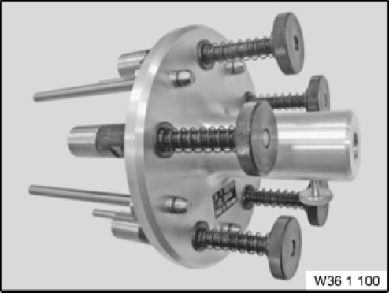

36 1 100 Holder
36 1 100 Holder
0493771
MW

NOTE: (Wheel holder ACC) For configuring wheel laser for ACC adjusting device. [Released]
Storage Location: Individual
SI number: 02 04 05 (208)
Consisting of:
1 = 0493772 Basic body
NOTE: Discontinued, can only be ordered via complete tool [Discontinued]
2 = 0493773 Pin
NOTE: (Magnetic pin, complete) 5 pieces per holder [Released]
3 = 0493774 Pin
NOTE: (Probe pin) 5 pieces per fixture [Released]